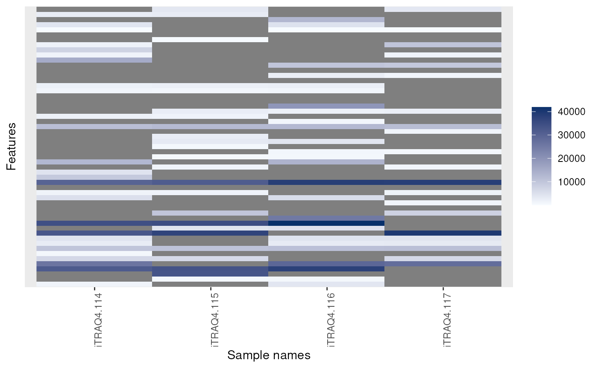
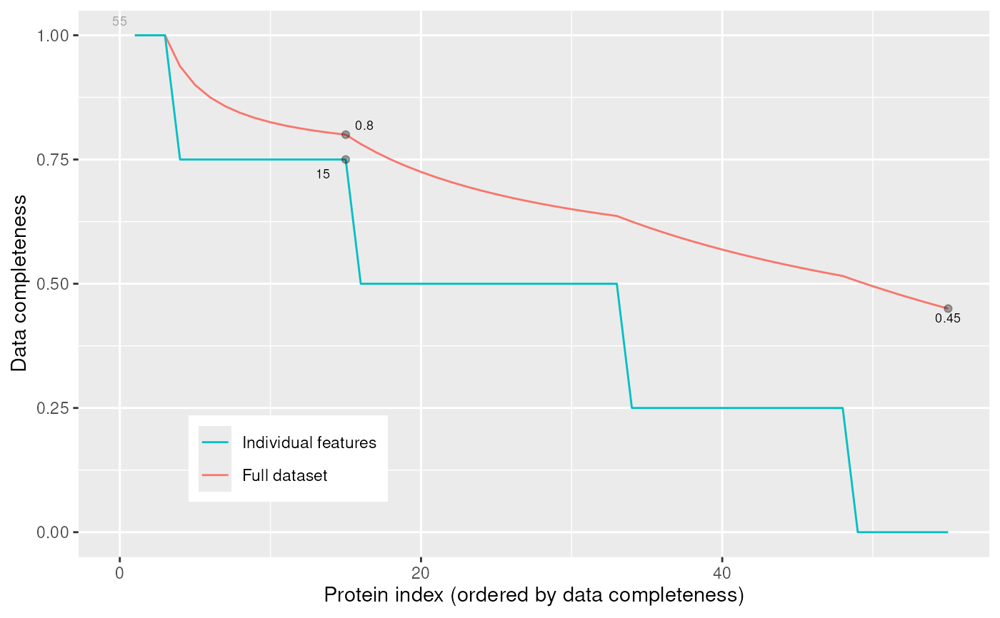

Exploring missing data in 'MSnSet' instances
plotNA-methods.RdThese methods produce plots that illustrate missing data.
is.na returns the expression matrix of it MSnSet
argument as a matrix of logicals referring whether the corresponding
cells are NA or not. It is generally used in conjunction with
table and image (see example below).
The plotNA method produces plots that illustrate missing data.
The completeness of the full dataset or a set of proteins (ordered by
increasing NA content along the x axis) is represented.
The methods make use the ggplot2 system. An object of class
'ggplot' is returned invisibly.
Methods
- is.na
signature(x = "MSnSet")Returns the a matrix of logicals of dimensionsdim(x)specifiying if respective values are missing in theMSnSet's expression matrix.- plotNA
signature(object = "MSnSet", pNA = "numeric")Plots missing data for anMSnSetinstance.pNAis anumericof length 1 that specifies the percentage of accepted missing data values per features. This value will be highlighted with a point on the figure, illustrating the overall percentage of NA values in the full data set and the number of proteins retained. Default is 1/2.
See also
See also the filterNA method to filter out features with
a specified proportion if missing values.
Examples
data(msnset)
exprs(msnset)[sample(prod(dim(msnset)), 120)] <- NA
head(is.na(msnset))
#> iTRAQ4.114 iTRAQ4.115 iTRAQ4.116 iTRAQ4.117
#> X1 FALSE TRUE TRUE FALSE
#> X10 TRUE FALSE FALSE TRUE
#> X11 TRUE FALSE TRUE TRUE
#> X12 FALSE FALSE FALSE TRUE
#> X13 FALSE TRUE FALSE FALSE
#> X14 FALSE FALSE TRUE FALSE
table(is.na(msnset))
#>
#> FALSE TRUE
#> 100 120
image(msnset)

plotNA(msnset, pNA = 1/4)
